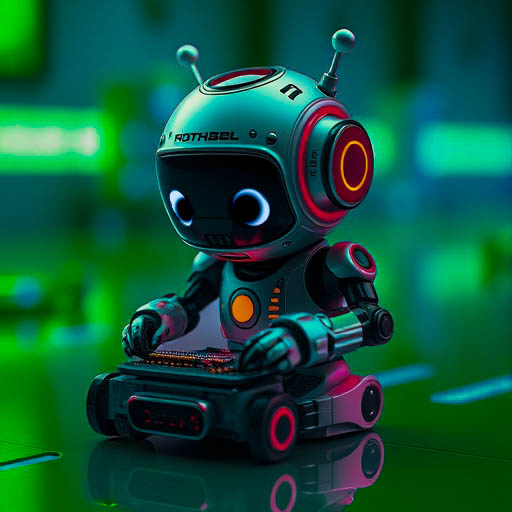

Über mich
Earth_Buster – Hendrik Jatzko
Hallo, mein Name ist Hendrik und ich bin derzeit in der 12. Klasse am Gymnasium Sonthofen. Ich habe mich schon immer für Elektronik und Computer interessiert. Seit ich meinen ersten Computer, einen Raspberri Pi 3B, vor vielen Jahren bekommen habe, war ich sehr vom Programmieren begeistert. Damals habe ich hauptsächlich mit Scratch und Python gearbeitet bis ich im Berufspraktikum in der 9. Klasse bei Gross Funk die Programmiersprache C und später auch C++ gelernt habe, die ich für die Programmierung von Mikrocontrollern verwende.